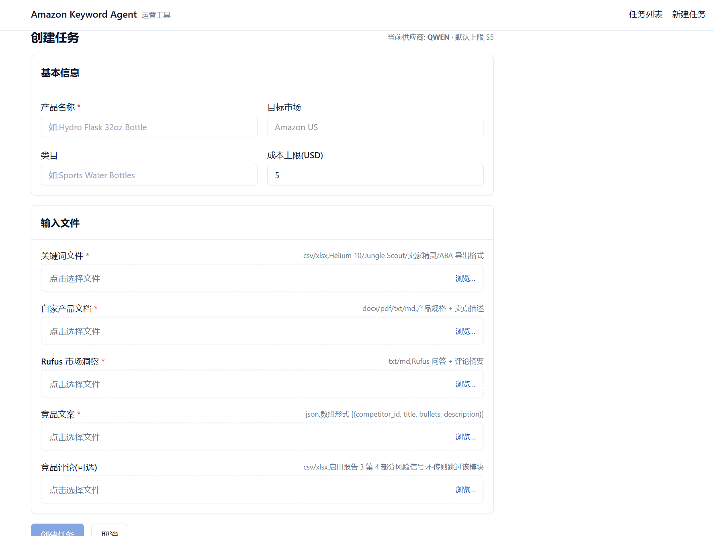
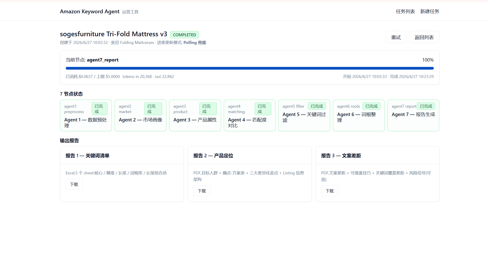
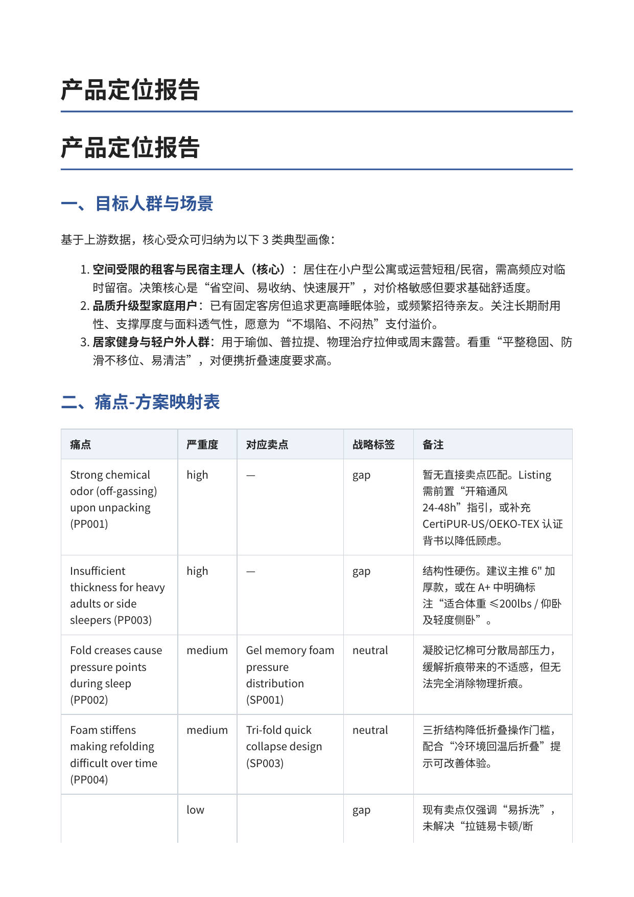
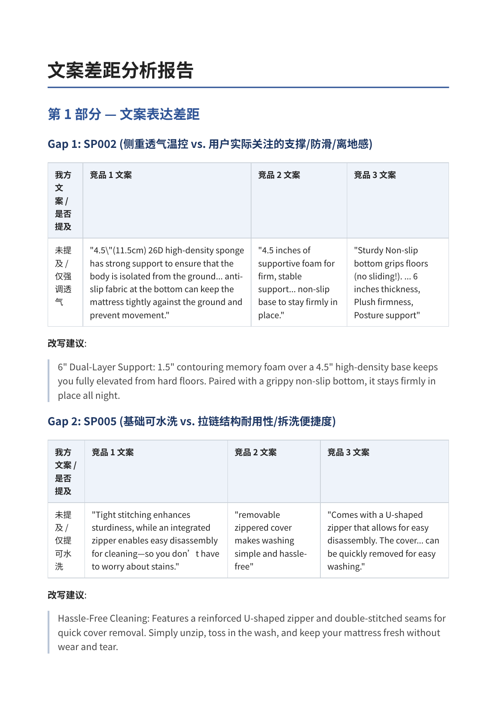

amzagent · 亚马逊关键词分析 Agent 系统
v1:为真实亚马逊运营交付、已部署使用 · v2:吸收反馈 + 最新 Agent 范式重构的多智能体版本(优化中)
把亚马逊运营 3–5 天的关键词分析与竞品研究,
压缩为单次约 30 分钟、产出三份可直接落地报告的 Agent 系统。
先交付了能用的 v1,再把它重构成一个站得住脚的多智能体系统。
同一个维度:一次完整分析的耗时、成本、规模与产出。数字均来自真实运行,非估算。
(生产加固、质量裁判评分、迭代中修复的真实缺陷等工程证据,见下文正文。)
客户场景与真实痛点
亚马逊运营在做新品上架前的关键词分析与竞品研究时,平均花费 3–5 天完成一次完整调研,大部分时间都花在重复机械的数据搬运和经验判断上,真正的策略思考反而被挤走了。
更深层的问题是:这种判断主要靠运营人员的经验,缺乏结构化方法。同一个产品交给两个不同的运营,得出的关键词矩阵可能完全不同;团队扩张时新人很难快速复用老人的判断逻辑。
这不是我凭空假设的痛点,它来自一位做真实亚马逊生意的朋友。她跟我说得很直接:「我知道哪些动作是必须做的,但每次做完都觉得自己只是个执行工具,我希望把这部分外包给系统。」下面这一章,就是我怎么从一次业务闲聊,把这个需求一步步「挖」出来、再交付回去的完整过程。
从一次业务闲聊,到一个交付上线的系统
这个项目不是「我想做个 Agent,再去找场景」,而是反过来:先钻进客户的真实生意里,需求才自己长出来。客户是一位做真实亚马逊生意的朋友;下面是完整的交付过程,也是我理解一个解决方案工程师该有的样子:业务、技术、商业三层同时在线。
- 不聊功能,先聊生意我没有一上来问「你想要什么功能」。先请她给我科普 TikTok、亚马逊的玩法和日常运营,一边听一边往核心追问:「你们运营的核心逻辑是什么?投流具体怎么做?」我想先长出业务直觉,而不是急着丢方案。 〔业务〕
- 追问到那一步「最烦、最耗时、又不能省」的活顺着聊,定位到一个绕不开的环节:上新品前的关键词与竞品分析。它不产生策略快感,却每次吃掉 3–5 天。这才是真正值得动手的痛点:不是她嘴上说想要什么,而是她流程里最痛的那一步。 〔业务〕
- 判断它到底能不能自动化我意识到:这一步虽然烦,本质却是把简单的对比与分析重复很多次,有结构、可拆解,正适合交给 Agent。同时问清她「之前试过什么工具」:用过无代码平台,但效果不好、仍要人做大量工作。这让我知道方案要赢在哪。 〔技术 + 商业〕
- 给出一个「无代码平台给不了」的提案我提议用 Agent + 详细的流程约束,把这个过程的幻觉和不稳定压下去,让它可复现、可改进、可信度更高。差异点不是能不能做,而是稳不稳定、可不可复现、可不可信,这恰恰是通用无代码方案的短板。 〔技术 + 商业〕
- 把「人怎么干、怎么算干得好」问成显性规则提案之后,我又和她逐步过了一遍「人类做这件事的完整工作流」,以及「怎么判断一次分析做得好不好」的评估标准,把她脑子里的隐性经验,翻译成系统能执行的规则。 〔业务 → 技术〕
- AI 辅助出 PRD,拿去和客户对齐带着工作流做出第一版 PRD:明确技术栈、输入输出、以及她在实际工作中怎么用。拿去确认时,又一起发现了一个「怎么评估作业质量」的漏洞,补上才开工。客户帮你把 spec 挑出漏洞,是交付里最值钱的一步。 〔业务 + 技术〕
- eval 驱动开发,再让客户用真实的活验收开发中用「模拟运营 + LLM 模拟评估」反复迭代出第一版。验收由她主导:拿一个真实分析任务,人工做一遍、Agent 跑一遍对照,内容大致一致、差距可接受,可读性还更好。到这一步才部署上线。 〔技术 + 业务〕
- 上线后的真实反馈,直接定义了 v2用起来之后她反馈两件事:①任务偶尔会「断」(后来查出是 API 余额耗尽、系统却不报错)②给了一堆参数,但调参的认知成本太高。这两条真实反馈,就是 v2 要修的东西,而不是我拍脑袋想升级。 〔技术 + 商业〕
- 业务层先懂生意再谈系统:听得懂投流、关键词、竞品对比,能从闲聊里定位到最痛且不能省的那一步,并把老师傅的隐性判断标准,问成系统能执行的显性规则。
- 技术层判断出「重复的对比分析」可被 Agent 承接;用流程约束压幻觉;用 eval 驱动迭代;v2 再用多智能体 + 并发,把「能用」做成「耐用」。
- 商业层清楚要赢的不是「能不能做」,是无代码方案给不了的「稳定 / 可复现 / 可信」;看得见价值(3–5 天 → 30 分钟、降低对「老师傅经验」的依赖);v2 主动考虑多人使用、多租户,从帮一个熟人往可被复制去想。
先做一个真的能用、真的交付出去的系统
把运营的判断流程拆解为 7 个有顺序的步骤,每一步用 AI 替代重复判断,最终产出三份结构化报告。这一版已在真实跨境电商运营场景中部署使用。
- 数据清洗处理原始关键词数据,统一格式
- Rufus 解析调用 Amazon Rufus 提取关键产品信息
- 产品拆解把竞品的卖点、定位、目标人群结构化
- 匹配度对比用「蓝海 / 红海 / 差距 / 中性」四标签模型评估每个关键词
- 三级关键词过滤按重要性分层:核心词 / 扩展词 / 长尾词
- 词根整理提取关键词背后的语义簇,辅助 Listing 撰写
- 报告生成产出三份报告:关键词矩阵 / 竞品分析 / 运营建议




v1 真实运行截图(折叠床垫品类)。四标签「蓝海 / 红海 / gap / 中性」直接对应决策动作,而非一个让人犹豫的分数。
v1 用起来之后,暴露的三类不足
v1 交付给运营真正用起来之后,加上这一年 Agent 工程范式(多智能体协作、MCP、评估审计)快速成熟,几个方向上的不足开始浮现,它们不是不能跑,而是离一个能给团队长期用的产品还差一层:
- 它其实不是「多智能体」v1 的 7 个「Agent」本质是一条固定顺序的工作流,节点间没有协商、判断、互查。真正的 Agent 系统应该能自己判断「这批数据该不该跑」「跑出来的报告合不合格」。
- 多人用会打架v1 是单租户的。团队几个运营一起用,参数、记忆、历史会互相干扰,需要一个「同品类共享经验、但各自参数互不影响」的租户模型。
- 失败会「静默」立项时踩过一个代价很大的坑:账户欠费导致 LLM 调用全部被拒 → 相关性评分全部兜底 → 关键词全被过滤 → 任务显示 100% 完成,报告却是空的。系统必须学会「响亮地报错」,而不是交付一份成功的空报告。
v2 就是冲着这三点重构的,并把它作为 Kaggle「AI Agents: Intensive Vibe Coding Capstone Project」的作品提交(已提交)。下面是重点。
从「一条流水线」到「会自我把关的多智能体系统」
核心思路:原来能用的分析流水线一行不改,把它整体封装成「工具」,在它之上加一层真正负责判断的智能体:判断该不该跑、跑得好不好、要不要重跑。
上层负责「判断」,下层负责「干活」。红框是入口,蓝框是复用与沉淀。整套系统的铁律:参数是人改的数据,LLM 只读记忆、只出文字建议,永不写参数、永不碰代码。
哪些路没走,为什么
v1 的分析流水线本身没问题,节点并发、成本熔断、断点续跑都做到了,真正缺的是判断。把它整体封成 MCP 工具,能力零损耗复用,新加的智能体层只负责真正需要判断的事。不为了「显得更新」而重写一个能用的东西。
ADK 层是 4 个 LlmAgent(输入闸 / 流水线执行 / 格式评审 / 质量裁判),由一个 SequentialAgent 顺序编排、评审用 LoopAgent 包成有界循环。真正的克制在于:我没有把引擎里 7 个分析步骤也拆成 7 个 Agent,它们保持确定性流水线、封装成一个工具。铁律是「单 Agent 扛得住就别拆,只在真正互相干扰的关注点上拆」:这里的关注点只有「值不值得跑」(输入闸)和「生成 vs 评判」(执行 Agent 独立于评审+裁判)。能证明「知道什么时候不该拆」,比「什么都拆」更值钱。
记忆是「这个品类通常什么参数组合效果好」的经验,同品类运营之间共享有意义;参数是「我这单业务的实际设置」,运营之间必须互不干扰。两者的作用域不一样,不能因为共享了记忆就误连成共享参数;多租户系统里,把「共享什么、隔离什么」想清楚是第一位的。
因为盲目重跑只会产出雷同内容(引擎的报告 prompt 目前不接受「批评」作为输入)。所以裁判打低分时,报告照常交付,但会标记「建议人工复核」并附上具体问题,既不静默拦截,也不假装没问题。诚实边界写进代码,而不是写进文档。
我实测过一致性:同一份报告让裁判独立评 10 次(生产真实温度,绕开缓存)。维度分很稳(覆盖度标准差 0、可执行性 0.23),但 verdict 会在 3.5 阈值附近翻(6 通过 / 4 不通过),因为这份报告恰好卡在边界,任何阈值都会翻。结论:清晰的好/烂报告信裁判,边界报告要留人工复核带。我知道我的裁判在哪能信、在哪不能信。而且这次评测顺手抓到一个真 bug:容器缺 pdftotext,导致中文 PDF 被读成乱码、裁判在冤枉报告;修掉才拿到上面这组干净数字。自动裁判的结论,先验证它读到的东西是不是干净的。
按「真的要上线扛 100–500 人」的标准做加固
作品做完后,我又拿它当真产品,按一家 100–500 人规模运营公司的部署场景做了四轮生产就绪加固。原则是:每一项都真实做故障注入验证,不是「配了就假设生效」。
- 真实认证把「信任请求头」换成 JWT 登录会话,角色写进签名令牌。验证方式:伪造管理员请求头依然被拒(403)。
- 生产化部署代码烤进镜像、多进程服务、崩溃自动重启、资源硬限制。做故障注入时暴露出两个真实问题(内存限制不锁 swap 等于没锁、编排文件的端口清空从没真正生效),都定位并修掉了。
- 吞吐与排队并发上调并核算过数据库连接预算;任务提交后返回真实的排队位置与预计等待,而不是让用户干等。真实历史数据算容量,不拍脑袋。
- 安全 / 质量层接入把上面架构里的输入闸、格式审计、质量裁判,从「演示脚本」真正接进用户会走的服务路径:提交前确定性校验挡住坏数据,交付后异步质检并写入记忆。
这一段最想说明的不是「我是底层调试专家」,而是一种验证纪律:任何「做完了」的结论,都要有一次真实的故障注入或复现证据顶着,而不是看配置觉得应该生效。过程中发现的每个问题,怎么发现、怎么证伪,都在项目文档里留了痕。
分层技术栈
- 智能体层(v2)Google ADK(LlmAgent / SequentialAgent / LoopAgent + 回调确定性刹车)· MCP(FastMCP,8 工具)· LiteLLM · LLM-as-Judge 四维评分
- 引擎层(v1)LangGraph 7 节点(2/3 节点并发)· OpenAI / 千问双供应商(注册表模式 Provider 抽象,业务代码不感知)· embedding 预筛 + 边界 self-consistency 投票 · 成本熔断 / 断点续跑
- 服务与数据FastAPI · Celery(prefork,连接预算核算过的并发)· PostgreSQL(参数版本化 / append-only 审计 / 记忆)· Redis(队列 / 缓存 / 双层限流)· MinIO · Alembic 迁移
- 前端Next.js 14 · Tailwind · shadcn/ui · SSE 实时进度 + polling 双保险 · 排队位置 / ETA
- 生产与质量Docker Compose 生产 overlay(gunicorn×uvicorn / 资源硬限 / 崩溃自愈)· JWT + bcrypt · 接口级限流 + CORS 白名单 · evals 回归闸(每轮迭代 GATE PASS 才收尾)· 14 个 Prompt 包 × 5 类测试夹具
两个版本各自的真实状态
v1:已在真实跨境电商运营场景部署使用。涉及客户业务数据不公开。
v2:多智能体重构 + 四轮生产加固已完成并在本地真实数据上端到端验证通过(质量裁判曾真的抓到报告里编造的数字并判不合格),已作为 Kaggle capstone 提交。尚未部署上线,仍在优化中。下一步方向是引入领域知识库(把亚马逊品类的运营经验沉淀成可检索的知识,让系统的判断更贴合具体品类,而不只依赖单次输入)。